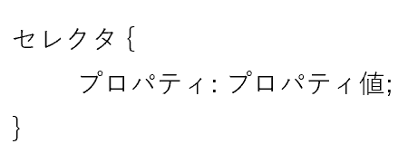
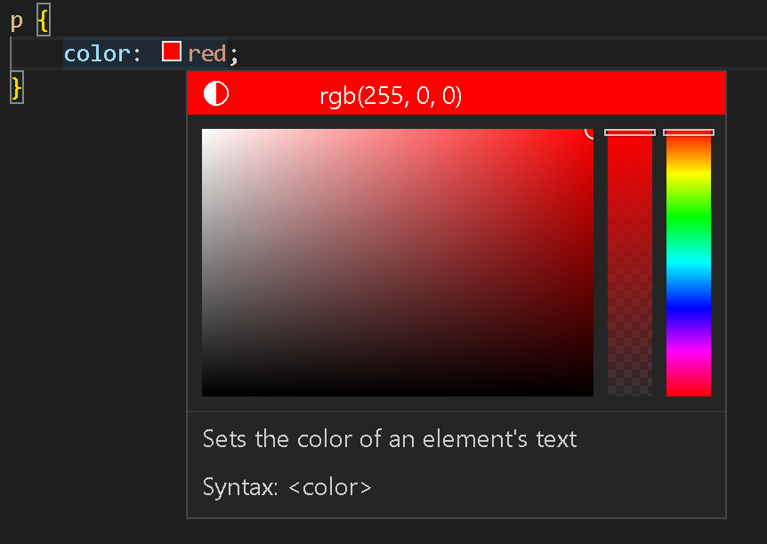
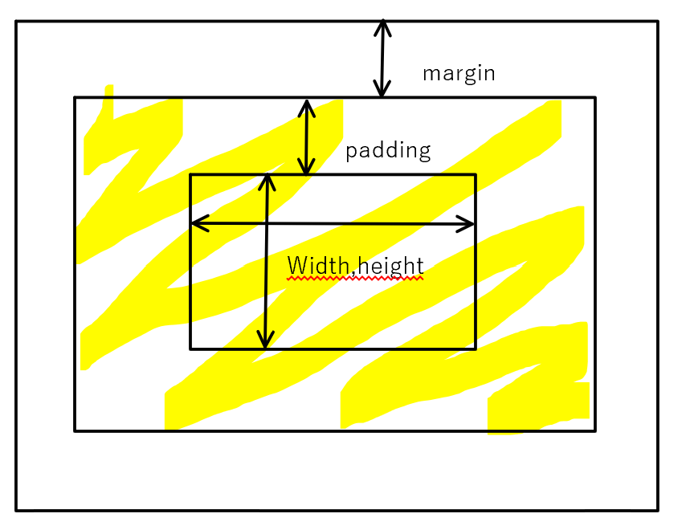

ホーム>
CSS基礎知識まとめ
HTML/CSS初心者が今まで学んだことを学んだことを使ってまとめてみました。
ここに書かれている知識があればこのサイトくらいのデザインはできるようになります。
これら以外にもいろいろ調べながら作りました。
メモをほぼそのまま写しただけなので、わかりにくいところがあればググってください。
CSSとは
CSSとは、HTMLで作成した文章のレイアウトや装飾をするものです。
カスケーディング・スタイル・シートを略してCSSと言います。
CSSでHTMLのみでサイトを作るとこのサイトのような感じになります。このサイトは私がHTMLを勉強したときに作ったものです。
コメントアウト
CSSでコメントアウトするには、
/*コメント*/
と記述しましょう。
コメントアウトすると、その行はコンピューターが読み込みません。主にあとで複雑な箇所を見て、「あれ、ここなにしてるんだっけ？」とならないようにメモを残すのに使われます。
基本文法

これがCSSの基本的な文法です。
「（セレクタ）の（プロパティ）を（値）にする」ということになります。
例）h3{color: #000;}→ h3のcolorを#000（黒）にする。
値の後に「;」をいれるようにしましょう。
セレクタの指定方法はこちらに。
CSSのリセット
各ブラウザはそれぞれ固有のスタイルを持っているため、それを初期化するとブラウザごとの差異が少なくなります。
そのために、head部分でリセットCSSというものを読み込むようにするといいらしいです。
CSSリセットは自分で書くのは大変なので、ググってコピペしましょう。
セレクタの指定方法
セレクタの指定方法は主に以下の３種類があります。以下の３種類をシンプルセレクタと言います。
- タグ名で指定する
- 例）p{~~}
- idで指定する
- 例）#id名{~~}
- class名で指定する
- 例）.class名{~~}
セレクタの指定方法＜応用編＞
- 絞り込み指定
-
指定したいセレクタ同士の間にスペースを入れるとセレクタを絞り込み指定することができます。
例）.main p span{~~} ←mainクラスの中のp要素の中のspan要素 - 複数指定
-
指定したいセレクタ同士の間に「,」を入れると複数のセレクタを指定することができます。
例）#headline,h2{~~} - 部分一致選択
-
指定したテキストがテキストのはじめ（おわり）に含まれている文字列を指定できます。
例1）a[href^="https://"] ← https:// で始まる属性値のhref属性を持ったaタグを指定できる
例2）a[href$="https://"] ← https:// で終わる属性値のhref属性を持ったaタグを指定できる
- 疑似クラス
-
- ｎ番目の要素
-
兄弟要素の中でｎ番目の要素を指定できます。
- first
-
<ariticle p: first-of-type;> ← articleタグの中の最初のpタグが指定される
<ariticle p: first-child;> ← articleタグの中の最初の要素がpタグだった時、指定される - last
-
<ariticle p: last-of-type;> ← articleタグの中の最後のpタグが指定される
<ariticle p: last-child;> ← articleタグの中の最後の要素がpタグだった時、指定される - nth
-
<ariticle p: nth-of-type(n);> ← articleタグの中のn番目のpタグが指定される
<ariticle p: nth-child(n);> ← articleタグの中のn番目の要素がpタグだった時、指定される
- :not
- 指定した要素以外の要素が指定されます。 例）:not(ariticle p: first-of-type;) ← articleタグの中のn番目のpタグ以外が指定される
- :hover
-
カーソルを合わせたものが選択されます。
画面左のもくじのもくじみたいな感じです。 - ::after（before）
- セレクタの後（前）に何か付けられます。
- ::first-line（letter）
- 最初の行（文字）が選択される
- 結合子
-
シンプルセレクタを組み合わせて指定する方法
- 子孫セレクタ
- 絞り込み指定のこと
- 子セレクタ
-
A>B
Aタグ直下のBタグのみ指定できます。 - 隣接セレクタ
-
A+B
Aの次以降のBが指定できます。 - 間接セレクタ
-
A~B
A以降のBが指定できます。
重要プロパティ
よく使われる重要なプロパティらしいです。
- font-size
-
文字サイズを指定するプロパティです。
プロパティ値
- px
- デジタル画像の最小単位のことです。
- em
- 現在のフォントサイズに対する倍率です。
- color
-
選択した要素の色（主に文字の）を指定できます。
プロパティ値
- 色名
- 色の名前をそのまま入力するパターン。
例）red、blue、pink… - カラーコード
- 色に数値で名前を付けたもの。色名よりもこまかく色を指定できる。
どんなものがあるかはググってください。
例）#000000は黒
カラーピッカー
視覚的、直感的に色のカラーコードを指定できるものです。私が使っているvisual studio codeには標準で搭載されています。

↑こんな感じのものです。便利なので、ガンガン使いましょう。
- text-align
-
文字を中央や左右に寄せることができます。
プロパティ値はcenter、right、leftの3種類で、それぞれ中央、右、左に寄せられます。 - background-color
-
選択した要素の背景色を指定できます。プロパティ値はcolorと一緒です。
- border
-
要素の周りに線を引くことができます。また、borderのあとに-top、-bottom、-left、-rightをつけると、それぞれ上、下、左、右のみに個別で線を引くことができます。
プロパティ値
プロパティ値は線の太さ、色、線の種類の３つです。
線の太さはpxで、色はcolorと同じように、線の種類は下の表の通りに指定します。
- solid…実線
- dotted…点線
- dashed…破線
- doubli…二重線
- width,height
-
widthは要素の横幅、heightは要素の高さを指定できます。
プロパティ値
- auto
- 初期値になる。
- ○○px
- pxで指定する方法。
- ○○%
- 親要素の大きさに対する割合で指定する方法。
- calc(計算式)
- 計算式の部分は例えば100%/3と入力すると画面の3分の1の大きさになる。
- min-width,max-width
-
横幅の最小、最大を指定できます。
「width:○○pxはPCだとちょうどいいけどスマホだと大きすぎる！」といったときにmin-width:○○%というようにすると、○○%より小さくならなくなる。
また、画像のプロパティをwidth:100& height:autoとすると、縦横の比は保たれたまま画像の拡大縮小ができる。 - display
-
要素の配置を指定できます。
以下displayのプロパティ値です。可、不可は指定可能かどうかを表しています。- block
-
通常の表示形式。要素が横いっぱいに広がり、縦に並べられる。
width,height…可
margin,padding…可
text-align,vertical-align…不可
- inline
-
要素が横に均等に並べられる。
width,height…不可 margin,padding…左右のみ可 text-align,vertical-align…可 - inline-block
- 要素は横に並べられるが、要素の中身は縦に並べられる。 width,height…可 margin,padding…可 text-align,vertical-align…可
- none
- 非表示になる。
- flex
-
flexboxというレイアウト用のモジュールです。
非常に覚えることが多いことや、レイアウト用モジュールには流行り廃りがあるとのことでしたので、ここでは詳しくは紹介しません。
こちらのサイトで非常にわかりやすく紹介されているので、気になる方はどうぞ。
- 余白
-
marginとpaddingの2種類があります。widthとheightで骨を作り、paddingで肉を付け、marginで気を纏うイメージと勝手に思っています。
例えばセレクタに色を付けるとpaddingには色が付くが、marginには色はつかないという感じです。

上下左右のみに余白を付けたいときは、それぞれのプロパティのあとに-top,bottom,left,rightをつけることで付けられます。
上下左右をばらばらでそれぞれ指定したいときは、margin:10px 15px 20px 0pxのように記述しましょう。（上から時計回り）
%で指定した場合は親要素に対しての割合になります。
borderははみ出してしまうため、一緒に使いたい場合はbox-styleを使ってください。
marginが2つ重なると相殺されて大きい方だけの余白になります。
margin-right:auto; margin-left:auto;にすると左右の余白が同じになります。（marginのみ、左右のみ） - フォント
-
font-familyで指定できる。
OSによって対応していないフォントがあるので、プロパティ値を複数選択できるようになっています。複数選択した場合、左に記述したものから優先的に表示されます。英語のフォントから書くと、英語は英語のフォント、日本語は日本語のフォントになります。（日本語のフォントは英語にも対応していることがあるため。）
総称フォントファミリー…どのフォントにもOSが対応していない場合、最低限こういうフォントで表示するという指定をできます。以下一覧。
- ゴシック体…sans-serif
- 明朝体…serif
- 等幅系…monospace
- 筆記体系…cursive
- 装飾系…fantasy
※androidはDroid SansとRobotoの二種類しかありません。どちらもゴシック体です。
google fontなどのwebフォントもあるので、見ておくとよさそうです。 - 太字にする。
- font-weight: boldで太字にできます。
- 斜体にする。
- font-style: italicで斜体(shatai)にできます。
- 行間を変える。
- line-height: 値で調整できる。
- 字間
- letter-spacing: ~emで調整できます。1emで1文字分の字間が開けられます。
- 下線
-
様々な下線の引き方があります。以下例です。
- 普通の下線…text-decoration: underline, border-bottom: solid
- 点線…borderbottom: dotted
- 破線…border-bottom: dashed
- 二重線…border-bottom: double
- 蛍光マーカー風…background: liner-gradient(transparent 50%,色 50% ←%の部分をどちらも0にすると文字全体にマーカーになる。
- 取り消し線
- text-decoration:line-throughで取り消し線が引けます。
- 一部の文字だけ設定を変える。
-
<span style="設定">~</span>もしくは
<span class"##">~</span>→指定したclassに設定で変えられる。 - position
-
他の要素の位置を無視して要素を配置することができます。
要素の位置を固定したり、常に画面に表示しておいたりすることができるものです。
関連プロパティ
positionを理解するには関連するプロパティを知ってからの方が理解しやすいと思うので、先に関連プロパティを紹介します。
- top,bottom,left,right
- それぞれpositionで上下左右どこに配置するかどうかを指定するためのものです。pxと%で指定します。
- z-index
- positionで調整して重なる要素の順番を指定するためのプロパティです。プロパティ値には数字を記述し、プロパティ値が大きい要素ほど前面に配置されます。
プロパティ値
- static
- デフォルトで設定されているものです。要素の位置を指定することはできません。通常の位置に要素が配置されます。
- relative
- 本来表示される位置からどれだけ動かすかを指定します。 staticと違い、topなどを使って要素の位置を指定できます。
- absolute
- 親要素の左上からどれだけ動かすかを指定します。親要素をrelativeにしておかないと上手くいかないことがあるようです。
- fixed
- 画面の任意の場所に固定することができます。このページの左側のものはfixedで固定されています。
カスケード
同じ要素に複数のスタイルがかけられ、競合してしまうことあります。そういう場合、どのスタイルが優先されるかという決まりを、「カスケード」といいます。
その処理は以下の順番で行われます。
1. CSSの提供元による優先順位
2. 詳細度による優先順位
3. 記述順位による優先順位
スタイルの変更がうまくいかない場合、これらの優先順位が問題になっていることが多いそうです。
それぞれに関して以下に説明します。
- CSSの提供元による優先順位
-
1. !important付きのユーザスタイルシート（ユーザが用意したスタイルシート）
2. !important付きの製作者スタイルシート（製作者が用意したスタイルシート）
3. 製作者スタイルシート
4. ユーザスタイルシート
5. ブラウザスタイルシート - 詳細度による優先順位
-
セレクタの重要度のようなものを点数化して、高得点のものほど優先されます。
以下点数表です。
計算方法セレクタ inlineスタイル IDセレクタ クラスセレクタ 属性セレクタ 疑似クラス 要素型セレクタ 疑似要素 全称セレクタ(*) 点数 1000 100 10 10 10 1 1 0
記述例 div.content.demo div[lang="ja"] a:link 計算 1（要素型セレクタ）+10（クラスセレクタ）+10（クラスセレクタ） 1（要素型セレクタ）+10（属性セレクタ） 1（要素型セレクタ）+10（疑似クラス） - 記述順位による優先順位
- 単純に後ろに記述されたものが優先されます。
継承
親要素から子要素にプロパティを引き継ぐことです。プロパティ値に以下のものを記述すると継承ができます。
inherit … 親要素のプロパティを引き継ぐ。
initial … タグの何も設定していないときのプロパティ値になる。
unset … inheritかinitialになる。inheritが優先。